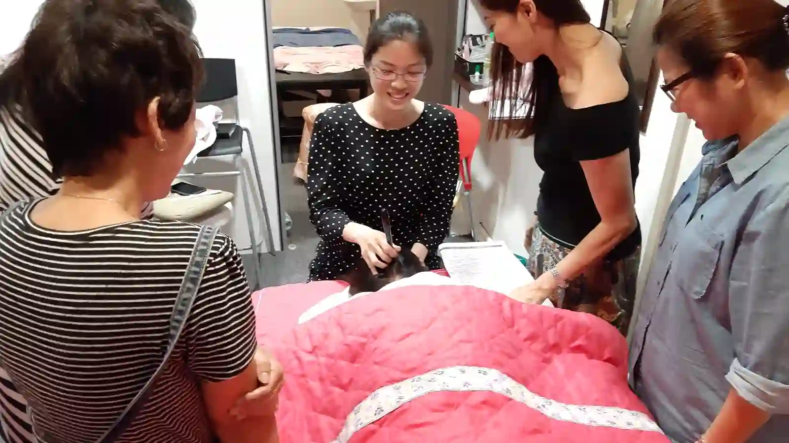

The Bojin Journal · Myths & real talk
Lost Weight and Your Face Looks Hollow? An Honest Answer

You did the thing everyone told you to do. You lost the weight, your clothes fit, your doctor is pleased. And then you catch yourself in a photograph and your face looks older than it did thirty pounds ago: flatter cheeks, a shadow under each cheekbone, skin along the jaw that seems to have more room than it needs.
A Taiwan-based teacher on why the face empties out first after weight loss, what bojin genuinely cannot restore, and the narrower thing it can offer. Remember: this is a gentle, supported self-care observation you can test on one side of your face—never a forceful press or medical treatment.
Nobody warns you about this part. Women write to me about it with a strange guilt, as though being unhappy about their face undoes the accomplishment. It doesn't, and the question deserves a real answer rather than a comforting one.
Why the face empties out first
Your face isn't just skin over bone. There are distinct pads of fat in the cheeks, temples, and around the mouth, and they're part of what gives a face its curve and fullness. They're also among the first places the body draws from when you lose weight, which is why the face often changes faster and more visibly than anywhere else.
Age compounds it. Those pads shrink and shift downward on their own timeline after 40, regardless of weight. Skin that had more spring at 35 doesn't rebound the same way at 60. So when weight loss removes volume from underneath, the skin that was covering it has less capacity to take up the slack than it once did.
That's the honest mechanism: less volume underneath, and skin that responds to that change more slowly than it used to.
What bojin can and cannot do about it
I'll take the "cannot" first, because it's the part that matters.
Bojin cannot restore lost facial volume. There's no gentle external method that puts fat back into a cheek, and if you find someone claiming otherwise, that's the moment to close the page. It also cannot tighten loose skin back to a previous state. Those are structural changes, and the honest options for them are the medical ones: fillers, fat transfer, or surgical approaches, discussed with a qualified professional.
No gentle external method restores facial volume. That's a structural change, and the honest options are medical ones. What a routine offers is narrower, but still real.

What a routine can offer is narrower and still worth having. Hollowness often reads worse when it's paired with tension and dullness: a tight jaw, a braced brow, a complexion that looks flat and tired. Easing that tension and improving how the face looks and feels at rest makes the whole face read as more awake, even though the volume hasn't changed at all. That effect is gentle and temporary, and it builds with consistency.
There's a second thing, and it isn't a small one: a routine is five minutes of paying kind attention to a face you may be feeling complicated about right now. That has its own value.
The 5 steps for a face that's lost volume

Use more slip than usual.
Skin with less underlying volume is easier to drag, so be generous with oil and let the tool glide.
Warm well before working.
Longer warming than you might think, so nothing has to be forced.
Support the skin with your other hand.
Rest two fingers just ahead of the tool to keep skin from being pulled. This matters more here than on a fuller face.
Lighten the pressure.
Comfortable pressure on this face is lighter than comfortable pressure on the one you had before, and the right pressure is still the one that reaches without hurting.
Finish down the neck.
As always, and gently.
Honest expectations, and a safety note
Expect your face to look and feel more rested, not fuller. If it's volume you want back, that conversation belongs with a dermatologist or a plastic surgeon, and I'd rather point you there clearly than let a five-minute routine stand in for it. Bojin sits comfortably alongside those options; it doesn't replace them.
Your face changing after weight loss is a real thing that happened, not vanity for noticing it. Knowing exactly what a gentle routine can and can't do for it means you can decide clearly about the rest, instead of hoping five minutes will do a job it was never able to do.
Quick answers
Can bojin restore facial volume lost from weight loss?
No. No gentle external method puts volume back. That's a structural change, and the honest options are medical ones discussed with a qualified professional.
Why did my face change so much more than the rest of me?
The face has distinct fat pads that are among the first the body draws from, and after 40 those pads are already shrinking and shifting on their own.
What can a routine actually do for a hollow-looking face?
Ease the tension and dullness that make hollowness read worse, so the face looks more rested. Gentle and temporary, and it builds with consistency.
Should I change my technique for a thinner face?
Yes. Use more slip, warm longer, support the skin with your other hand, and use lighter pressure than you did on a fuller face.
Want to see the supported, lighter technique?
My free 3-minute video shows the supporting-hand technique that matters most on thinner skin.
Watch the free 3-min videoYu-Ting Lan is a Taiwan-based international bojin instructor and the founder of Héhé Studio. She has taught her bojin method to more than a thousand students, from complete beginners to grandmothers, across Taiwan, Hong Kong, and Malaysia.